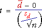

Annäherung
Wir haben gesehen, dass das Problem der Untersuchung, ob zwei gepaarte Messungen, X und Y, gleiche Mittelwerte besitzen, in Form der Unterschiede gelöst wird
D = Y - X
Der Test wird dann wie folgt ausgedrückt
H0: µD = 0
HA: µD ≠ 0
oder in einer einseitigen Variante ausgedrückt. Dies
ist eine
univarianter Standardhypothesentest der Form, wie er im
vorangegangenen Abschnitt mehrfach untersucht wurde.
Gepaarter t-Test
Die Hypothese wird deshalb mit einem Standard-t-Test analysiert. Die Teststatistik ist

und wird mit einer t-Verteilung mit n - 1 Freiheitsgraden verglichen, um den p-Wert zu finden.
Das Alter, in dem Kinder mit Herzkrankheiten zu sprechen beginnen
Ein Wissenschaftler, der sich mit angeborenen Herzkrankheiten beschäftigt, will die Entwicklung zyanotischer Kinder mit normalen Kindern vergleichen. Eine relevante Messung ist dabei, mit welchem Alter die Kinder ihr erstes Wort sprechen.
Anstatt eine Gruppe zyanotischer und eine Gruppe normaler Kinder unabhängig voneinander für seinen Vergleich zu wählen, entscheidet sich der Wissenschaftler für zyanotische Kinder mit Geschwistern des gleichen Geschlechts. Die Messwerte dieser Kinder bilden deshalb einen vgepaarten Datensatz. Das Alter in Monaten, in dem das erste Wort gesprochen wurde, ist in der folgenden Tabelle dargestellt.
| Geschwisterpaare | Zyanotische/r Schwester/Bruder |
Normale/r Schwester/Bruder |
Unterschied (zyanotisch - normal) |
||||
|---|---|---|---|---|---|---|---|
|
|
|
|
Die Daten sind gepaart, da die Werte von Paaren aus der gleichen Familie stammen.
Der Wissenschaftler möchte untersuchen, ob zyanotische Kinder ihre ersten Worte im Durchschnitt später sprechen als gesunde Kinder, also ist ein einseitiger Test angebracht. Die Differenz zwischen den jeweiligen Geschwisterpaaren (zyanotisch – gesund) wird mit D bezeichnet, wobei überprüft wird, ob es einen Beweis für µD > 0 gibt (d.h., dass das mittlere Alter, bei dem die ersten Worte gesprochen werden, bei zyanotischen Kindern größer ist als bei gesunden Kindern). Die Hypothesen sind deshalb:
H0: µD = 0
HA: µD > 0
Da der p-Wert für den Test deutlich über 0 liegt (0,201), gibt es keinen Beweis dafür, dass zyanotischen Kinder später sprechen lernen.
Wähle Modifizierte Daten aus dem Pop-Up-Menü und nutze dann den Schieberegler, um zu testen, wie viel höher der Mittelwert für die „zyanotischen“ Werte sein müsste, um einen starken Beweis für einen Unterschied zu liefern.
Blutdruck und die Pille
In diesem Beispiel wurde der Blutdruck von 15 Frauen im Hochschulalter vor und nach der sechsmonatigen Einnahmezeit der Pille gemessen. Die Daten wurden weiter oben in einer Tabelle erfasst und sind im Folgenden graphisch dargestellt
In diesem Fall wird ein zweiseitiger Test genutzt, da die Pille den Blutdruck entweder erhöhen oder erniedrigen kann. Wird die Differenz des Blutdrucks einer jeden Frau vor und nach der Einnahme mit D = (danach – davor) bezeichnet, können die Hypothesen von Interesse folgendermaßen aufgestellt werden:
H0: µD = 0
HA: µD ≠ 0
Der p-Wert für diesen Test ist rechts unten berechnet.
Der resultierende p-Wert ist sehr klein, ein starjer Hinweis darauf, dass sich der Blutdruck geändert hat. Der Test liefert nur den Beweis, dass es einen Unterschied im mittleren Blutdruck gibt. Allerdings deutet der positive t-Wert µD > 0 an, so dass geschlussfolgert werden kann, dass es einen Beweis gibt, dass der Blutdruck nach Einnahme der Pille sinkt.
Wähle erneut Modifizierte Daten und überprüfe, wie unterschiedlich Stichprobenmittelwerte sein müssen, um einen Beweis für die Unterschiede in den Populationsmittelwerten zu erzielen.